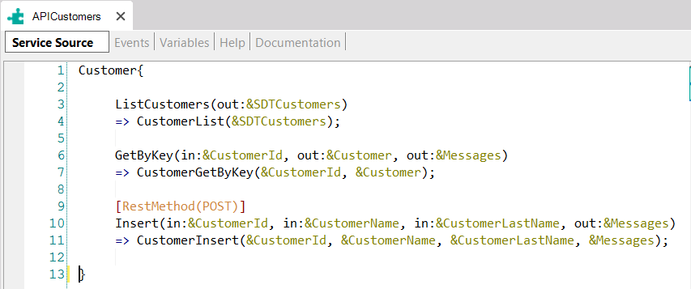

This article describes all the necessary steps to declare, inside an API object called APICustomers, an Update service that updates the data of a certain customer (received by parameter) into the Database.
Consider a Knowledge Base containing:
1) A Customer Transaction object:
Customer
{
CustomerId*
CustomerName
CustomerLastName
}
Note: The Customer Transaction has Automatic data population.
2) An API object called APICustomers. In its Service Source tab, it already contains three services declared that map external names exposed as services with the internal implementations in the KB:

Now, suppose you need to define another service (method) named Update, as part of the APICustomers object, to allow updating a certain Customer in the database (the customer data is sent as parameters).
To achieve this, the Customer Transaction must be set as a Business Component.
Next, you have to create a new Procedure object named CustomerUpdate.
In the Procedure Rules section, define a Parm rule as follows:
Parm(in:&CustomerId, in:&CustomerName, in:&CustomerLastName, out:&Messages);
In the Procedure Source, define the following code:
&Customer.Load(&CustomerId)
&Customer.CustomerName=&CustomerName
&Customer.CustomerLastName=&CustomerLastName
If &Customer.Update()
commit
else
rollback
Endif
&Messages= &Customer.GetMessages()
Now, go to the APICustomers API Object, and inside its Service Source declare the new method (Update) under the last method:
Customer{
...
[RestMethod(PUT)]
Update(in:&CustomerId, in:&CustomerName, in:&CustomerLastName, out:&Messages)
=>CustomerUpdate(&CustomerId, &CustomerName, &CustomerLastName, &Messages);
}
Note that in this case, the RestMethod annotation precedes the service declaration indicating that the HTTP method to be used is PUT.
The &CustomerId, &CustomerName, and &CustomerLastName variables are defined as input parameters (they are sent to be assigned).
The &Messages variable is an output parameter that returns the messages obtained after performing the Business Component Update method to inform the user if the operation was successful.
It is important to add the same variables you already defined in the Procedure object in the API object.
The next step is to define–if necessary–the Events in the Events section of the API Object (APICustomers).
Event Update.Before
//Some Code if is needed
EndEvent
Event Update.After
//Some Code if is needed
EndEvent
The 'Update.Before' and 'Update.After' events will be executed on each invocation of the Update service.
The order of events executed in this example is as follows:
Below you can see all the steps being executed:
| Backlinks | |
| Calling rest API Using Postman app | Toc:First Steps with API Objects |